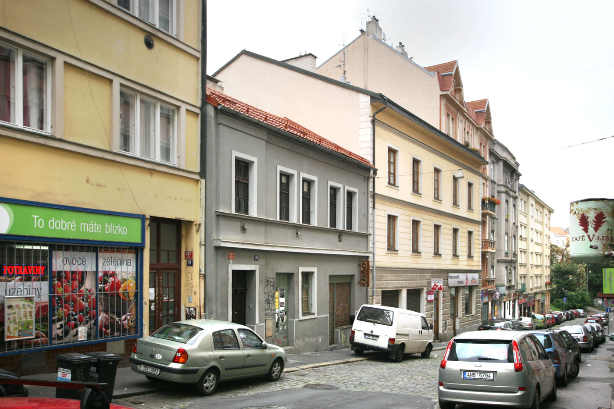
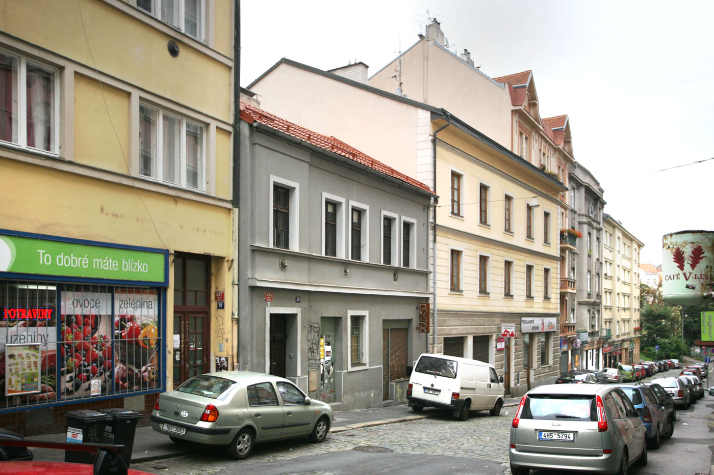
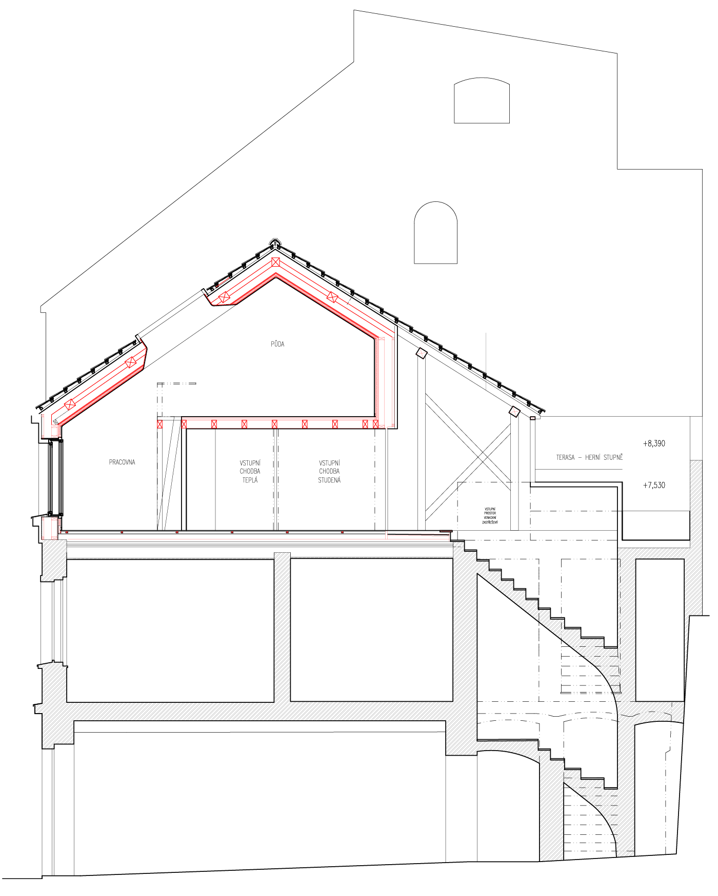
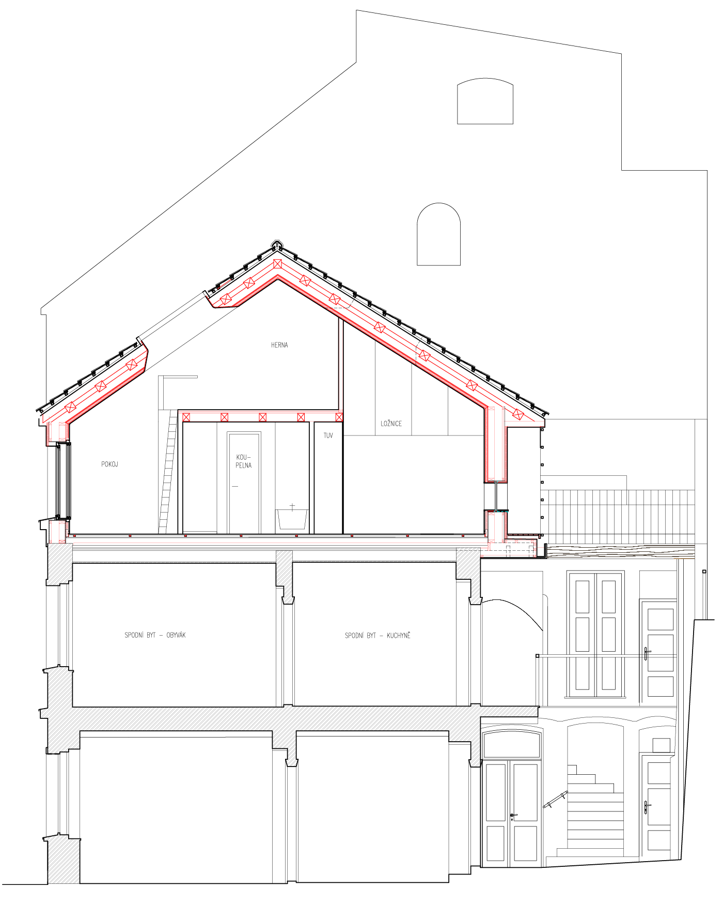
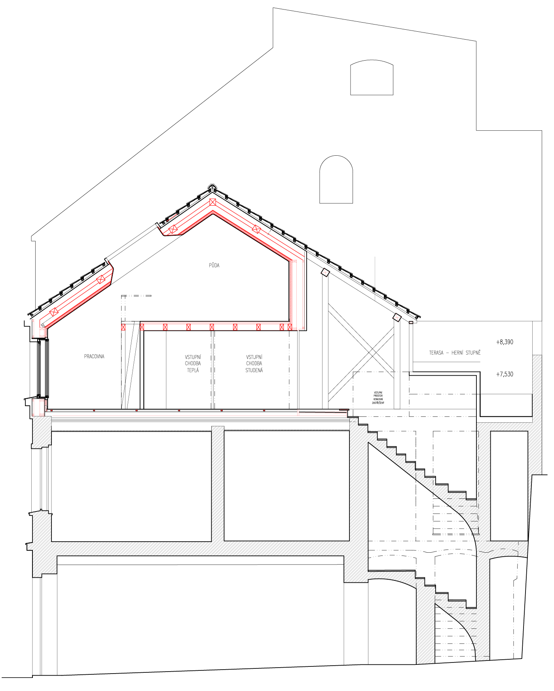
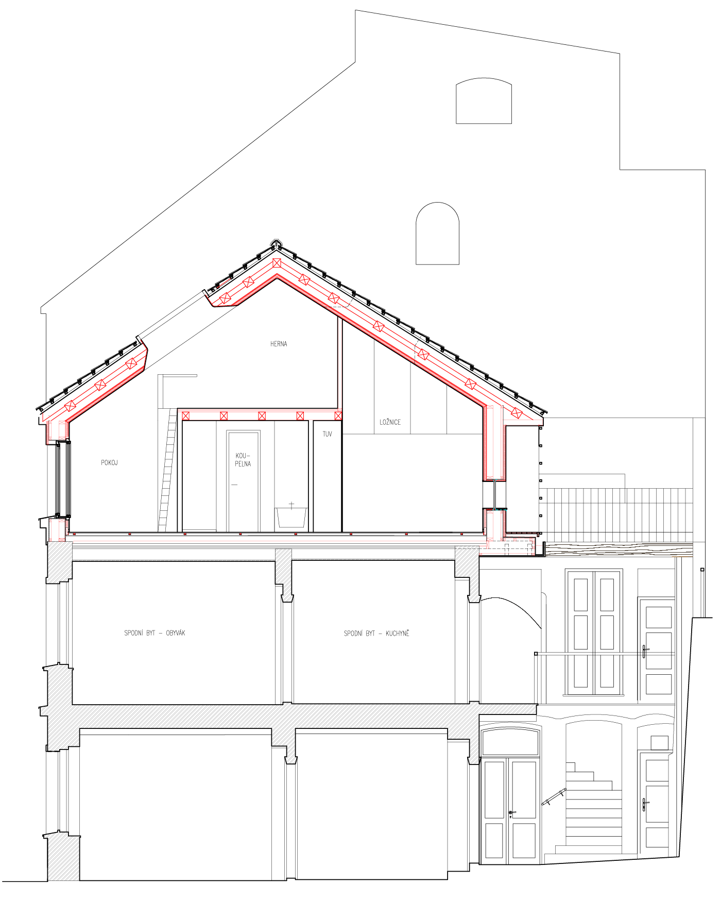
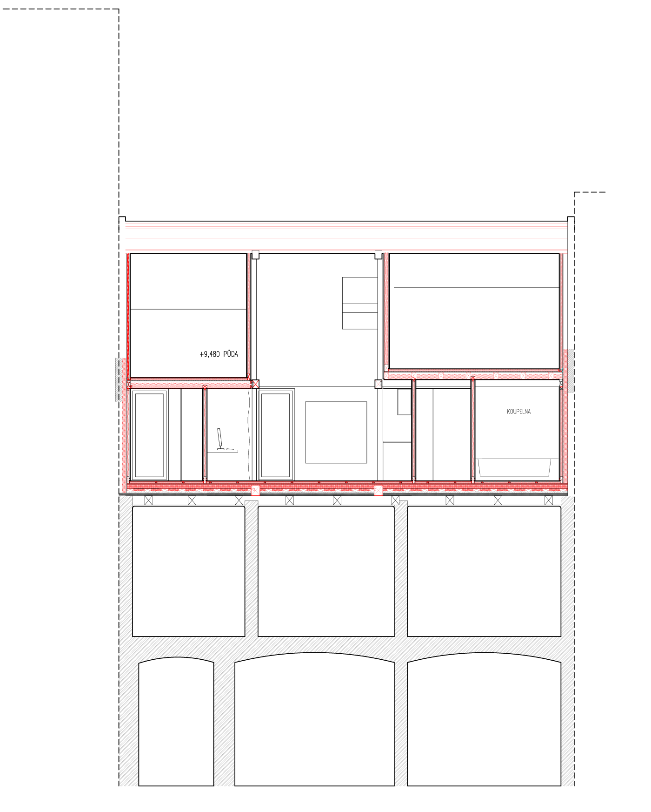
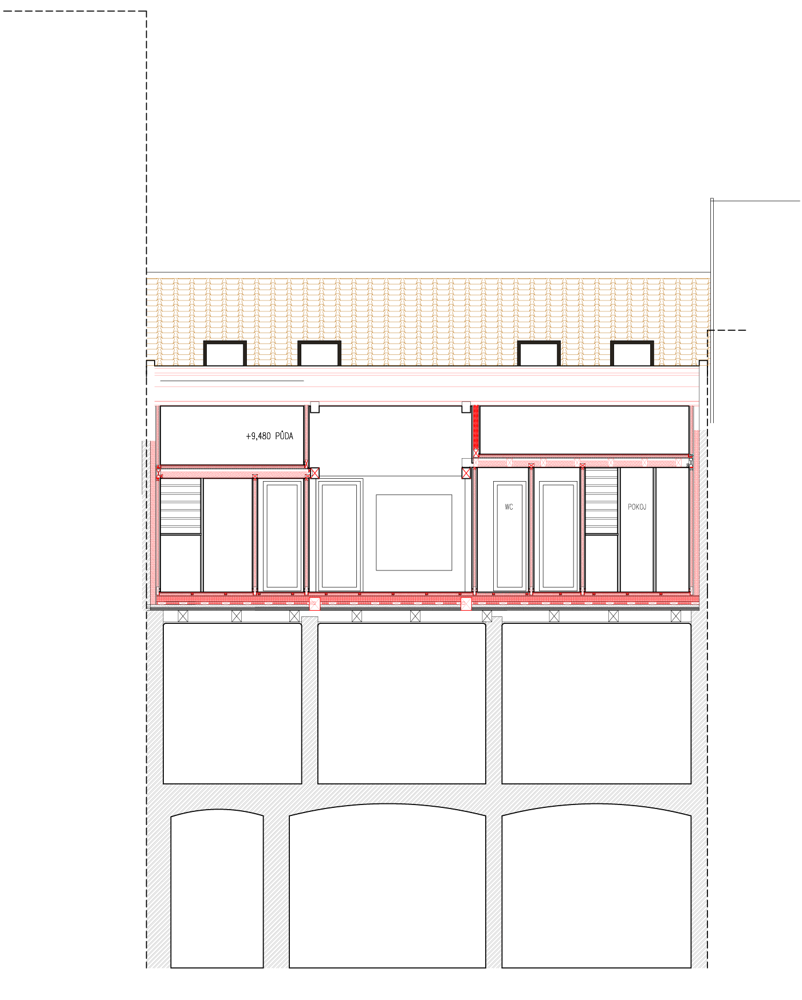
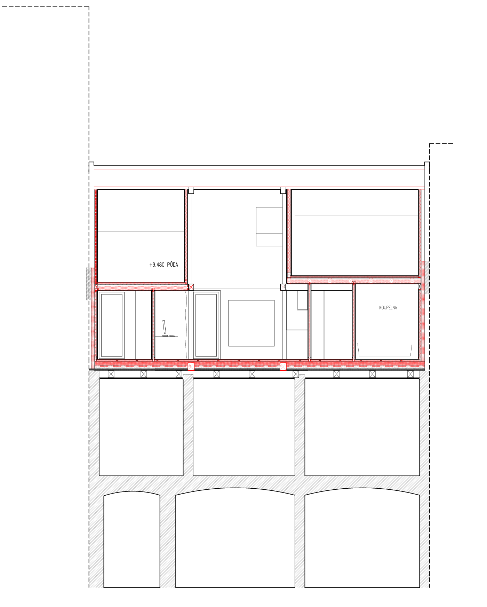
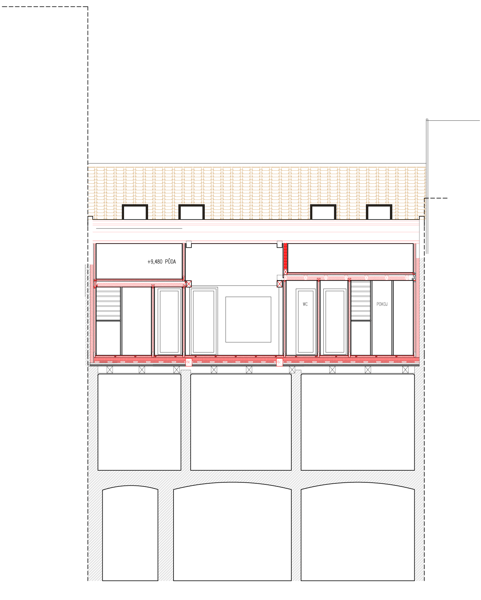

-
 


-


 
 



Nástavba v Krymské
Objekt se nachází v blokové zástavě na západním konci Vršovic, kde je výrazný terén a drobná proporce ulic. Setkává se tu zástavba velkých činžovních domů z počátku 20. století s předchozí drobnou zástavbou starých Vršovic, jejíž dochovaným příkladem je projednávaný dvoupodlažní dům č.p. 294. Je situován uliční fasádou k jihu do ulice Krymské. Je však silně zastíněn protějšími činžovními pětipodlažními domy. Od severu je silně převýšen zástavbou i terénem od ulice Francouzská. Proto i dvůr je silně zastíněn – od severu má opěrnou zeď zahrady sousedícího objektu dosahující poloviny 2. podlaží. V celkové urbanistické kompozici je cenný kontrast větších činžovních domů s dvoupodlažní původnější zástavbou Vršovic. Dává místu specifickou atmosféru, která je výrazným terénem ještě umocněna.
Zděný dvoupodlažní nepodsklepený objekt se sedlovou střechou vznikl pravděpodobně koncem 19. století. Původně jako jednopodlažní dvojdomek (spolu s vedlejším již neexistujícím objektem). Zanedlouho byl objekt navýšen o podlaží a původní průchod mezi domy nahrazen chodbou. Z přízemí se stal obchodní prostor. V 2. podlaží byla vybudována pavlač se vstupy do tří malých bytů a společným WC s přístupem z pavlače. Jeden byt byl později doplněn dřevěnou verandou do dvora. Výsledný objekt, který od té doby zůstal téměř nezměněn, je velmi typickým příkladem původní zástavby Vršovic s velmi skromným jak dispozičním, tak materiálovým řešením a s nemalým vstupem „lidové tvořivosti“. Např. původní veranda je velmi svérázným neopakovatelným prvkem, kombinací „posbíraných“ starých oken doplněný o velmi zdobné téměř neorenesanční vstupní dveře v detailu a zpracování výrazně vyšší kvality než zbytek objektu. Takových detailů je na objektu více a jako celek tvoří velmi barvitý „slepenec“ se silným geniem loci. To je hlavní tváří objektu: živelnost, barvitost a nestylovost, která tvoří velmi svébytný celek. V 2. polovině 20. století sloužil jako útočiště a dílna mladým umělcům.
Požadavky stavebníka (zbudování nové bytové jednotky) byly minimalizovány, tak aby bylo co možná nejvíce zachováno měřítko objektu se svým výrazným charakterem. Nové zásahy mají za cíl ctít principy vzniku původního objektu – vrstvení, jedinečnost každé části, slepenec, drobné měřítko.
Uliční fasáda: stávající celek získává rytmus v rámci 2.NP s kastlovými okny. Přízemí je živelně upraveno vstupy do obchodní jednotky, nyní Bar v Krymský, a rytmus se zde ztrácí. Plánovaná nástavba se tedy váže na 2.NP, cituje jeho rytmus a tvarosloví. Okna mají menší měřítko než v 2.NP aby podpořily výraz domu – je to jeden z mála posledních malých domů v ulici. Proto by neměl převyšovat římsy již nadstavených vedlejších domů.
Dvorní fasáda: návrh se snaží zachovat formu pavlačového domu a dům zvýšit co nejméně. Proto severní část domu se schodištěm nadstavena není, stávající střecha zde bude nahrazena pouze terasou a zachován štít k severu. Samotná hmota nástavby je pouze v hlavní hmotě do ulice. Vzniká citace pavlače s plastickým členěním. Který podtrhuje živelnost 2.NP a celého domu.
Kompozice je doplněna druhou „verandou“, která není slepě umístěna nad verandu původní, což by nebylo vhodné pro udržení měřítka domu. Naopak je umístěna kompozičně v jakémsi kontrapunktu vůči původní verandě. Nový prvek není slepou citací, protože část původní je neopakovatelná. Pouhým kopírováním bychom nejen ztratili charakter domu, ale též popřeli princip jeho vzniku. V navrhované dostavbě jsou užity tradiční materiály: vápenná omítka a olejované dřevo s využitím tradičních truhlářských detailů a spojů. Nová horní „pavlač“ je doplněna ocelovým zábradlím citující historickou pavlač o patro níže ve zjednodušené formě.
Střecha je sedlová se stávající neglazovanou pálenou krytinou, která bude znovu užita vzhledem k bezvadnému stavu. Klempířské prvky budou provedeny v poplastovaném plechu pískově šedé barvy. Stávající komíny jsou odstraněny, již nejsou třeba.
Dispoziční členění nástavby:
Nástavba je řešena jako 1 bytová jednotka se vstupem přes pavlač.Obytný prostor (3.04) s kuchyní je situován uprostřed dispozice a je doplněn na východ o ložnici (3.07), pokoj (3.09) a na západ pracovnu (3.08). Mezi pokojem a ložnicí je v privátněji pojaté části přístupné přes chodbu k ložnicím (3.03) umístěna koupelna (3.05) s umyvadlem, vanou a sprchovým koutem a samostatná toaleta (3.08) s umývátkem. Pokoje se otvírají do krovu – stěny se totiž lámou ve střechu již ve výši 2m, aby byla nástavba co nejnižší. Principielně se tedy jedná o podkroví, které je doplněno o patýrko s hernou (3.11) a půdou (3.10). Vstup je přes studenou (3.01) a následně teplou chodbu (3.02), které slouží i jako úložný prostor.
Obytné pokoje mají dřevěnou prkennou podlahu a stěny z SDK. Koupelna a toaleta jsou obloženy keramickým obkladem.Konstrukčně se jedná o rámovou difuzně otevřenou dřevostavbu s minerální izolací, která je doplněna uvnitř dispozice klasickou tesařskou konstrukcí odkazující na původní krov. Původní strop 1.NP je ponechán v původní skladbě a na něj je založena dřevostavba. Tento systém byl zvolen proto, aby se nepřetěžovaly stávající základy.
| Klient | soukromý |
| Lokace | Praha 10 – Vršovice, Česká republika |
| Typologie | bytový dům |
| Typ | rekonstrukce |
| Rok | 2017 - dosud |
| Status | ve výstavbě |
| Užitná plocha | 75,7 m² |
| Náklady | 4 500 000 Kč |
| Autoři | MgA. Marek Kundrata, MgA. Jan Říčný |
| Spoluautoři | MgA. Bibiana Heinichová |
| Spolupráce | statika: Ing. Filip Chmel |